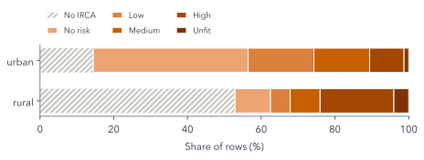
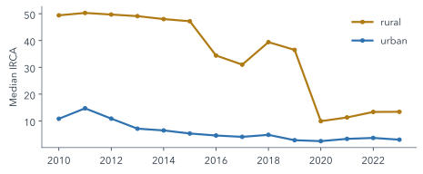

9 Look Before You Model
Quarto, reproducible publishing, coding assistants, Markdown, Python, EPUB, data analysis, k-means clustering
Before any model, look at the data. Exploring tells you what a model will and will not be able to see: which columns are sparse, which zones are never measured, and whether a series changes level for reasons that have nothing to do with the thing it measures. None of that shows up as an error. A clustering algorithm will happily group rows that have been made comparable only by filling their gaps, and a chart of a series whose method changed will draw a trend that is not there.
This chapter does three things with the water data: it looks at how much is missing and where, it looks at how the IRCA moves over time, and it looks closely at one municipality, Tunja, to see what the caveats in the data’s README mean in practice. Then the assistant builds the project’s first page, explore.qmd.
9.1 What exploring is for
Four questions are worth answering before modelling any table, and this chapter asks each of them of the water data:
- How big is it? Rows and columns, and what one row is.
- What is missing, and where? Missingness by column and by group (here, by zone).
- How are the key values distributed? For IRCA, the count of rows in each risk band.
- How do they move over time? For IRCA, its median by year and zone.
The answers decide what the analysis can claim. If one group is mostly missing, conclusions about it rest on the minority that was measured, and that minority may not be typical.
9.2 Rural: less data, more risk

Figure 9.1 puts all 31,416 rows side by side. 53% of rural rows have no IRCA at all, against 14% of urban rows, because many rural systems are never sampled. Among the rural rows that do have a value, 51% fall in the high or unfit bands, against 12% of urban rows.
The two facts compound. Rural water is riskier where it is measured, and much of it is not measured. Missingness is not random: it is concentrated in small, remote, rural places. Any analysis that drops the rows without IRCA, as Part III’s must, describes sampled rural systems only, and should say so.

Figure 9.2 shows why the fourth question matters. The rural median drops sharply in 2016 and again in 2020. That could be an improvement in rural water, or a change in which systems were sampled; the data’s README warns that the 2020 drop may reflect sampling, and the open data cannot tell the two apart. An analysis that compares years should not read the drop as progress without evidence from outside the table.
9.3 One municipality, up close: Tunja
Aggregates hide the details that make a variable trustworthy or not. Tunja, the capital of Boyacá department, has 28 rows: two zones over fourteen years. Looking at them one variable at a time shows several of the README’s caveats in a single place (Figure 9.3).
water_municipal.csv. Pick a view (the data, a summary, a distribution, a time series or a scatter plot), then a variable and a zone. Variables that repeat the same value in both zone rows are municipal and are counted once.
Four things are worth finding. Because Tunja is a department capital, its coverage has no urban and rural split, so the explorer uses the municipality’s total. Some years’ coverage is reported as exactly 0, which in context probably means “not reported” rather than “no service”; those points are drawn hollow. The fiscal index idf ends in 2020 and idf_new starts there, on a different scale, so the two must never be joined into one line. And infant mortality changes method in 2017, so its apparent drop that year is not an improvement. Saber 11 exists only for 2014–2017, 2019, 2020 and 2022.
Summaries in the explorer never pool the two zones. Averaging the small rural population’s values with the much larger urban population’s would describe neither. The same caution applies to every comparison in this part: compare like with like, and say which rows a number comes from.
9.4 The first page: explore.qmd
Read data/README.md. Create explore.qmd from data/water_municipal.csv (divipola as text): rows and columns, % missing per column by `zone`, IRCA counts by Resolución 2115 band and `zone`, and median IRCA by `year` and `zone`, labelled utility-supplied (prestadores). Render it; report errors.writes explore.qmd · uv run quarto render explore.qmd
open explore.html in your browser
“divipola as text” matters: the codes have leading zeros (05001 is Medellín), and a code read as a number loses them, and with them the join to any other table.
Check the missingness table before trusting the page. If irca is not much sparser in rural rows than in urban ones, the assistant probably counted the wrong column, or counted rows rather than values. You now know the answer the table should give (Figure 9.1), which is exactly what makes the check possible.
The catch-up also copies data/ if it is missing: the water checkpoints hold sources only.
Summary
Explore before you model: size, missingness by group, distributions and trends over time. In the water data, rural rows are mostly unmeasured and, where measured, far riskier, so any analysis of measured rows describes sampled systems only. The rural median IRCA falls sharply in 2016 and 2020, which the data alone cannot distinguish from a change in sampling. One municipality up close shows the README’s caveats in practice: no zone split for capitals, zeros that probably mean “not reported”, two fiscal indices on different scales, and a method change in infant mortality. Read codes as text, and check each summary against what you already know it should say.
Further reading
examples/water/data/README.md, “Known gaps and caveats”, in the workshop repository: the full list of the data’s traps, with how each was found.- pandas, Working with missing data (checked 2026-11-12).
- Quarto, Tables: computed and Markdown tables with captions (checked 2026-11-12).